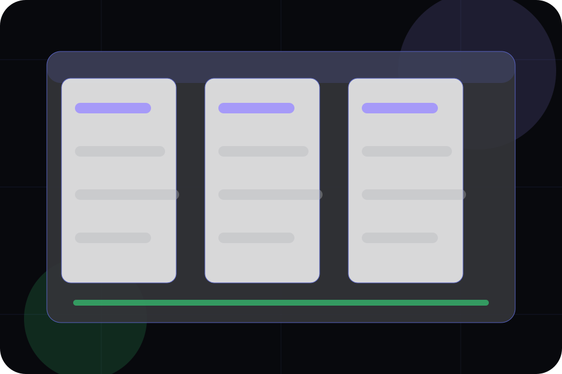

Better State
Uses defines what becomes clearer, easier, or safer when Orbit is the chosen route.
Solutions / 01
Solutions opens as a clear software decision hub: what Orbit offers, who it helps, why it matters, and which route to take first.
The first screen combines positioning, proof, primary action, and fast internal navigation, so people can act immediately or compare the rest of the solutions route with context.
App interface hero
Select the closest route and Orbit keeps the next step, proof, and follow-up expectation aligned with speed, clarity, and product confidence.

Solutions / 02
Uses defines the better state Orbit is built to create, with enough detail to make the promise believable.
A product-led SaaS site with a dark dashboard hero, precise modules, issue-like cards, and calm product copy. The section grounds that direction in concrete benefits, visible tradeoffs, and a next route visitors can use when the promise feels relevant.
Explore SolutionsUses defines what becomes clearer, easier, or safer when Orbit is the chosen route.
The benefit is tied to speed, clarity, and product confidence, not a vague quality claim.
Visitors get a linked path to compare the promise against services, standards, or examples.
Solutions / 03
Teams defines the better state Orbit is built to create, with enough detail to make the promise believable.
A product-led SaaS site with a dark dashboard hero, precise modules, issue-like cards, and calm product copy. The section grounds that direction in concrete benefits, visible tradeoffs, and a next route visitors can use when the promise feels relevant.
Explore SolutionsTeams defines what becomes clearer, easier, or safer when Orbit is the chosen route.
The benefit is tied to speed, clarity, and product confidence, not a vague quality claim.
Visitors get a linked path to compare the promise against services, standards, or examples.
Solutions / 04
Industries defines the better state Orbit is built to create, with enough detail to make the promise believable.
A product-led SaaS site with a dark dashboard hero, precise modules, issue-like cards, and calm product copy. The section grounds that direction in concrete benefits, visible tradeoffs, and a next route visitors can use when the promise feels relevant.
Explore SolutionsIndustries defines what becomes clearer, easier, or safer when Orbit is the chosen route.
The benefit is tied to speed, clarity, and product confidence, not a vague quality claim.
Visitors get a linked path to compare the promise against services, standards, or examples.
Solutions / 05
Problems frames the pressure behind the visit, then connects it to a practical path visitors can recognise and act on.
The copy avoids blame and panic. It shows the common friction, the practical consequence, and the calmer route Orbit uses to move people forward.
Explore SolutionsProblems names the real friction visitors bring to the solutions route, so the page feels relevant before any claim is made.
The copy connects that friction to practical risk, delay, confusion, or missed opportunity without exaggerating it.
The final cue moves visitors toward a clearer route instead of leaving them with the problem alone.
Solutions / 06
Outcomes defines the better state Orbit is built to create, with enough detail to make the promise believable.
A product-led SaaS site with a dark dashboard hero, precise modules, issue-like cards, and calm product copy. The section grounds that direction in concrete benefits, visible tradeoffs, and a next route visitors can use when the promise feels relevant.
Explore SolutionsOrbit structures outcomes around better state, practical gain, and a clear next route so visitors can compare the block quickly before they schedule a demo.
Schedule DemoSolutions / 07
Workflows defines the better state Orbit is built to create, with enough detail to make the promise believable.
A product-led SaaS site with a dark dashboard hero, precise modules, issue-like cards, and calm product copy. The section grounds that direction in concrete benefits, visible tradeoffs, and a next route visitors can use when the promise feels relevant.
Explore SolutionsWorkflows defines what becomes clearer, easier, or safer when Orbit is the chosen route.
The benefit is tied to speed, clarity, and product confidence, not a vague quality claim.
Visitors get a linked path to compare the promise against services, standards, or examples.
Solutions / 08
Proof defines the better state Orbit is built to create, with enough detail to make the promise believable.
A product-led SaaS site with a dark dashboard hero, precise modules, issue-like cards, and calm product copy. The section grounds that direction in concrete benefits, visible tradeoffs, and a next route visitors can use when the promise feels relevant.
Explore SolutionsProof defines what becomes clearer, easier, or safer when Orbit is the chosen route.
The benefit is tied to speed, clarity, and product confidence, not a vague quality claim.
Visitors get a linked path to compare the promise against services, standards, or examples.
Solutions / 09
Fit defines the better state Orbit is built to create, with enough detail to make the promise believable.
A product-led SaaS site with a dark dashboard hero, precise modules, issue-like cards, and calm product copy. The section grounds that direction in concrete benefits, visible tradeoffs, and a next route visitors can use when the promise feels relevant.
Explore SolutionsFit defines what becomes clearer, easier, or safer when Orbit is the chosen route.
The benefit is tied to speed, clarity, and product confidence, not a vague quality claim.
Visitors get a linked path to compare the promise against services, standards, or examples.
Solutions / 10
Orbit closes the solutions route with a clear action, a quick reminder of the value, and a low-friction way to schedule a demo.
Visitors who are ready can use the primary action. Visitors who are still comparing can scan the section links, proof, and support routes before they schedule a demo.
Schedule DemoThe final block keeps the choice simple: act now, compare one more proof route, or send enough detail for a focused response.
Schedule Demospeed, clarity, and product confidence
A product-led SaaS site with a dark dashboard hero, precise modules, issue-like cards, and calm product copy. Solutions ends with a direct path to schedule a demo, plus enough context for visitors who still need to compare.
Information is provided for planning and should be reviewed for the final client, location, and operating rules.